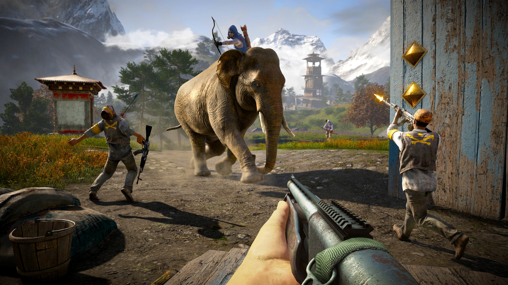

It is the successor to the 2012 video
game Far Cry 3, and the fourth main installment in the Far Cry series. Set
in the fictional Himalayan country of Kyrat, the game follows Ajay Ghale,
a young Kyrati-American, who becomes caught in a civil war between Kyrat's
Royal Army, controlled by the tyrannical king Pagan Min, and a rebel
movement called the Golden Path. The gameplay focuses on combat and open
world exploration; players battle enemy soldiers and dangerous wildlife
using a wide array of weapons. The game features many elements found in
role-playing games, such as a branching storyline and side quests. The
game also features a map editor and both cooperative and competitive
multiplayer modes. Announced in May 2014, development on Far Cry 4 began
immediately after the shipment of Assassin's Creed III in late 2012.

The
team originally intended to develop a direct sequel to Far Cry 3 that
continues the narrative, but the idea was later scrapped and the team
decided to develop a new setting and story for the game. Certain aspects
of Far Cry 4 were inspired by the Nepalese Civil War, and the design of
the game's antagonist Pagan Min was inspired by Japanese films Ichi the
Killer and Brother. Troy Baker was hired to portray Pagan Min. The game's
competitive multiplayer was created by Red Storm Entertainment while the
Shangri-La segments in the campaign were handled by Ubisoft Toronto. Far
Cry 4 was released worldwide for PlayStation 3, PlayStation 4, Windows,
Xbox 360, and Xbox One in November 2014.

It received mostly positive
reviews, with critics praising the open-world design, visuals, soundtrack,
and characters as well as new gameplay additions and the wealth of
content. However, some reviewers disliked the story and found the game too
similar to its predecessor. The game sold over 10 million units by March
2020. Several releases of downloadable content were subsequently
published. A spin-off title, Far Cry Primal, was released in February
2016. A successor, Far Cry 5, was released in March 2018.